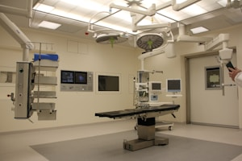

Recent Stories
New Pediatric Wing Opens
Our expanded children's center now offers 40 additional beds and a family lounge.
1,000th Heart Surgery Milestone
Our cardiac team celebrates a landmark achievement in patient care.
Community Health Fair Success
Over 500 residents received free screenings at our annual wellness event.

Nurse of the Year Award
Congratulations to this year's winner for outstanding dedication to patient care.

Telehealth Services Expand
Virtual visits now available for 15 specialties across the network.

$2M Cancer Research Grant
New funding supports innovative immunotherapy trials at our oncology center.

ER Renovation Complete
Upgraded trauma bays and faster triage improve emergency response times.

Volunteer Program Grows
200 new volunteers join our mission to support patients and families.